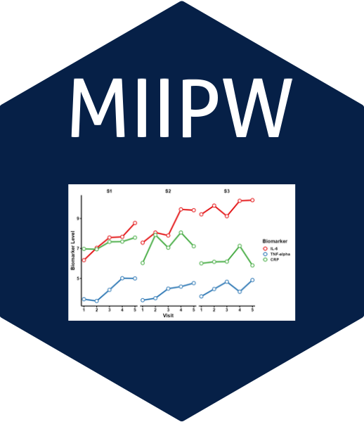

MIIPW is an R package for fitting Generalized Estimating Equations (GEE) when data is missing at random (MAR), using a combination of Mean Score (MS), Inverse Probability Weighting (IPW), and Multiple Imputation (MI) techniques.
✨ Features
The MIIPW package supports robust marginal modeling with missing outcome and covariate data by integrating:
- 📌 Mean Score Approach for consistent estimation under missingness
- 🧮 IPW Estimation using modeled response or missingness probabilities
- ♻️ Multiple Imputation (MI) integration for general missing data structures
- 📈 Flexible model specification with various correlation structures
- 📦 Easy interface using
gee()style model formulas
🛠 Installation
# Install from CRAN (when available)
install.packages("MIIPW")
# Or install the development version from GitHub:
# install.packages("remotes")
remotes::install_github("kumarbhrigu/MIIPW")